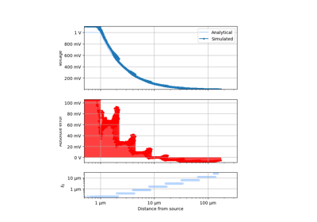
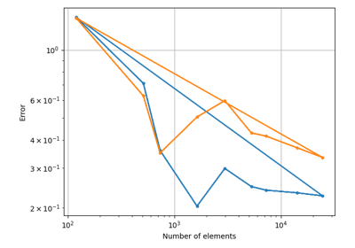
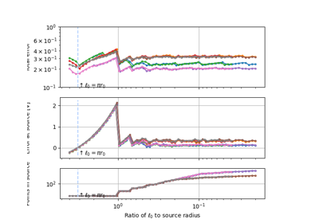
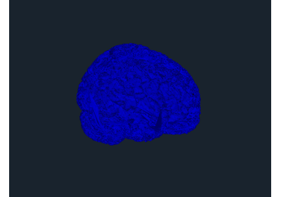

Example applications


Single timestep


Depth sweep

Singularity


sphx_glr_auto_examples_Common.py
Common resources for simulations.
Geometry
Interfacing with externally-defined geometries.

sphx_glr_auto_examples_Geometry_brainmod.py
Created on Thu Apr 20 17:27:58 2023
Logo

Stylized brain